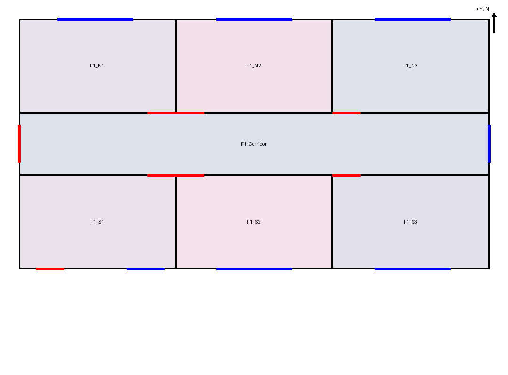
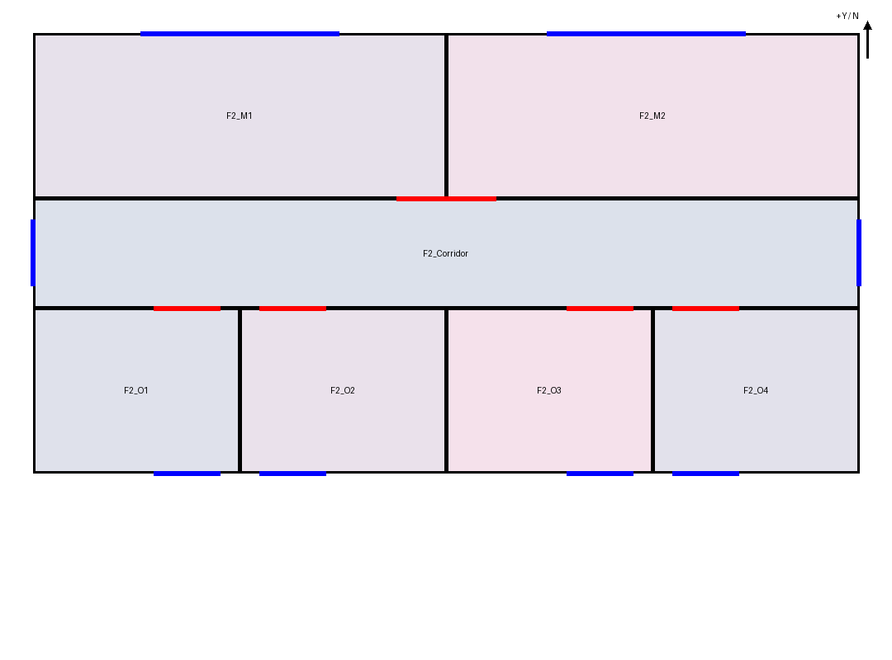

14 个空间 · 15 扇窗 · 14 个门洞。几何检查、独立分区比较通过，15 扇窗全部对应。先前发现的假门、重复门和室间错连已消除。
这是三次保存候选恢复的成果，最后一次由开发助手指出模型备注与几何清单的矛盾；不是一次独立冷启动成功。门宽、局部门位和部分高度仍为近似，旧对象的个别来源文字尚未迁移；请结合修订历史查看。原图未提供的跨层交通未虚构。
打开最终三维候选 · 独立分区/窗比较 · 门洞原图复核 · 运行证据与限制 · 源 BIM JSON
| 阶段 | 空间/窗/门 | 事后检查 |
|---|---|---|
| 原图冷启动 | 14 / 15 / 18 | 方向、分区及门洞严重错误；窗对应 7/15 |
| 方向恢复 | 14 / 15 / 18 | 分区通过，窗 14/15；门洞仍有问题 |
| 开口逐项核对 | 14 / 15 / 16 | 窗 15/15，二层去重；一层两处假门仍在 |
| 定向一致性修订 | 14 / 15 / 14 | 已知严重反例消除，保留精度与来源限制 |


二层几何本轮未变，下图沿用上次候选查看结果。

